Bormisu
Team Tiramisu · Herrenknecht challenge · BFH 2026
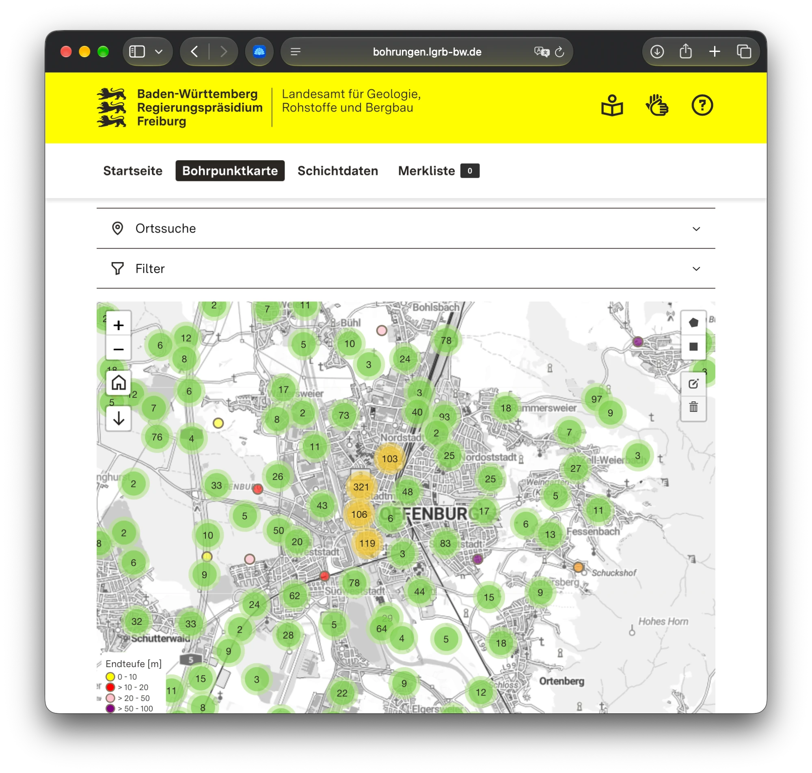
🤫
Stuttgart 21
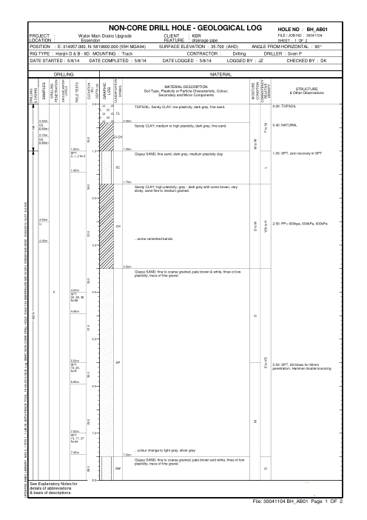
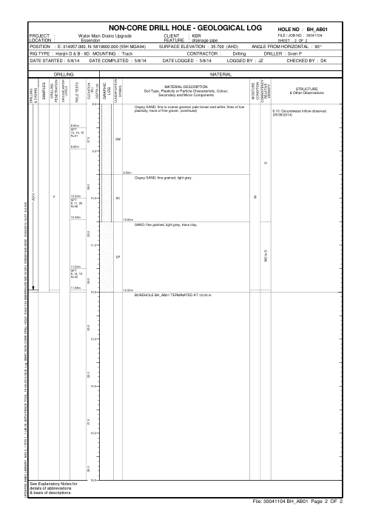
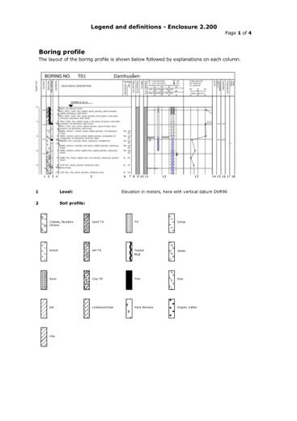
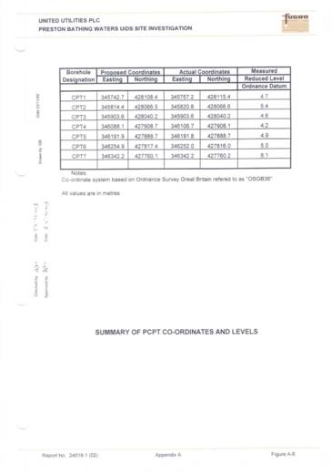
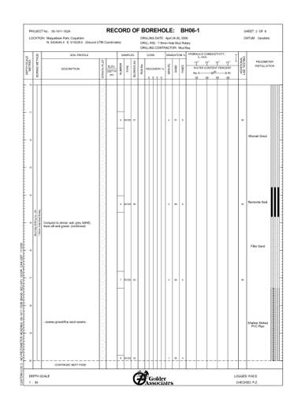
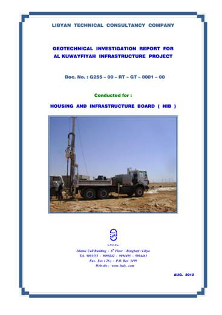
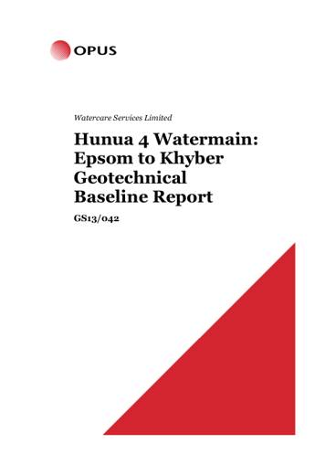
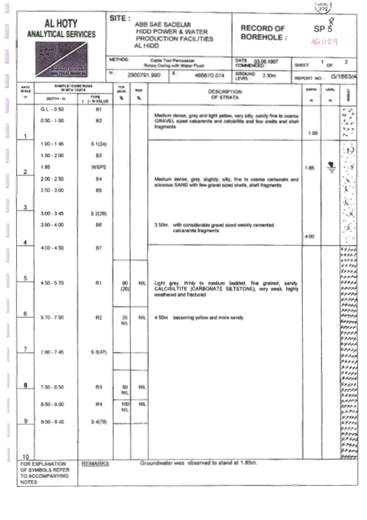
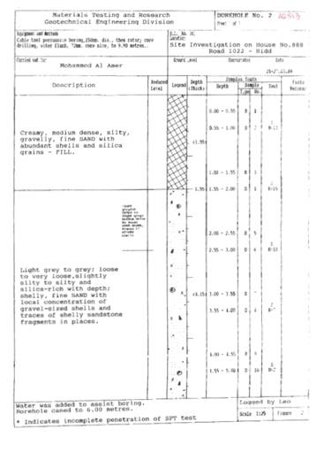
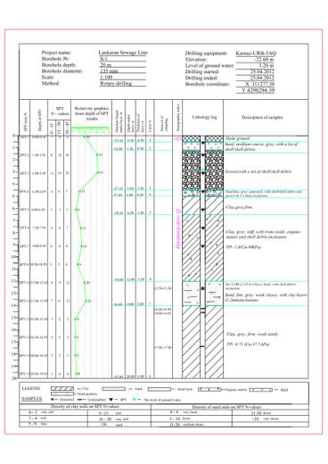
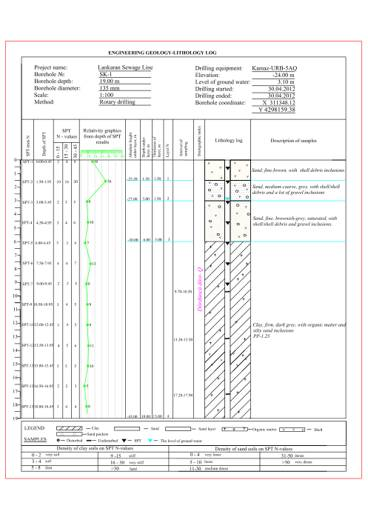
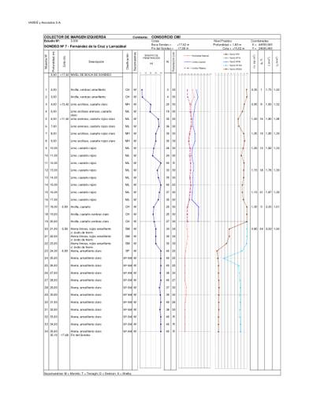
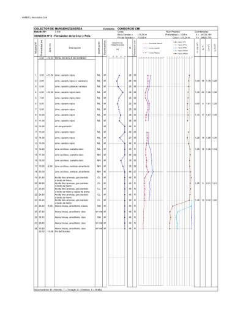
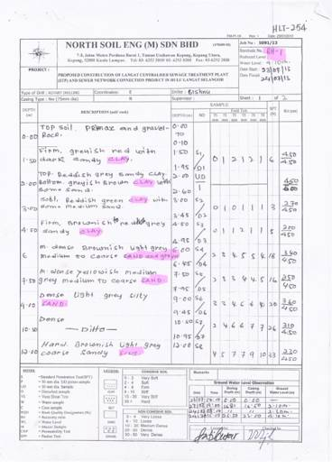
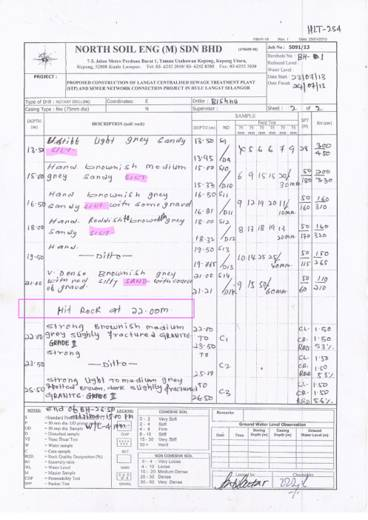
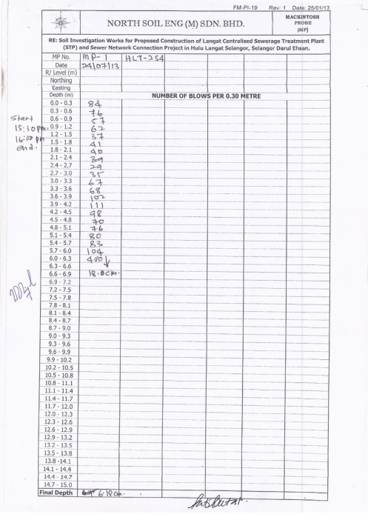
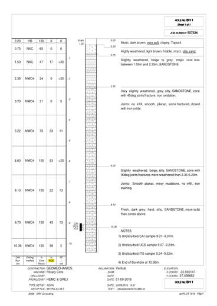
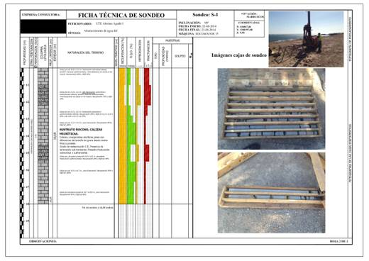
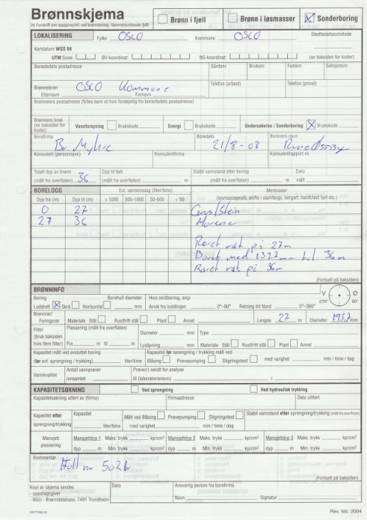
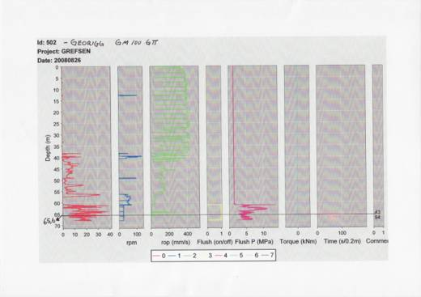
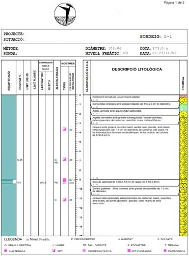
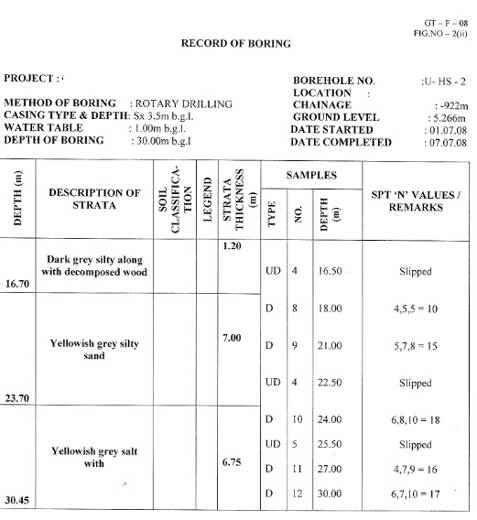
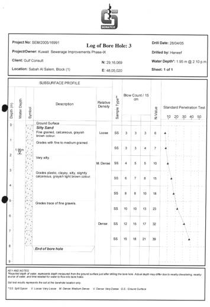
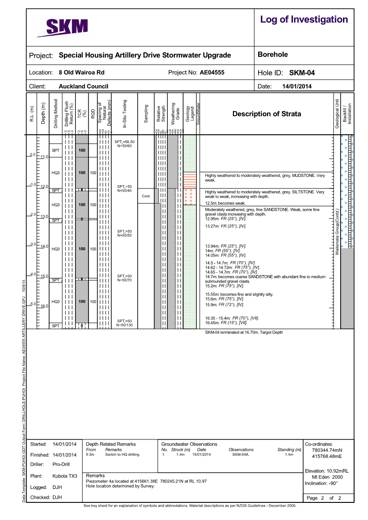
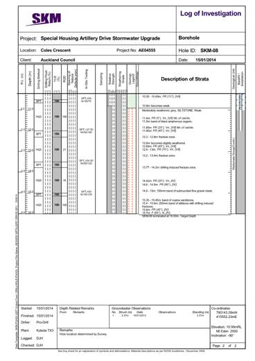
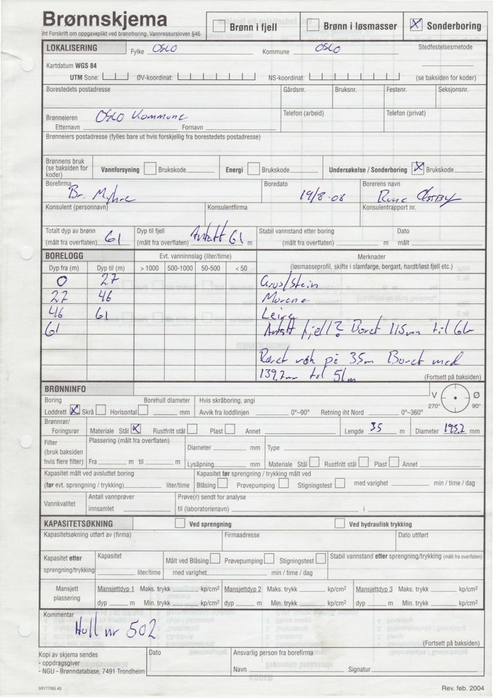
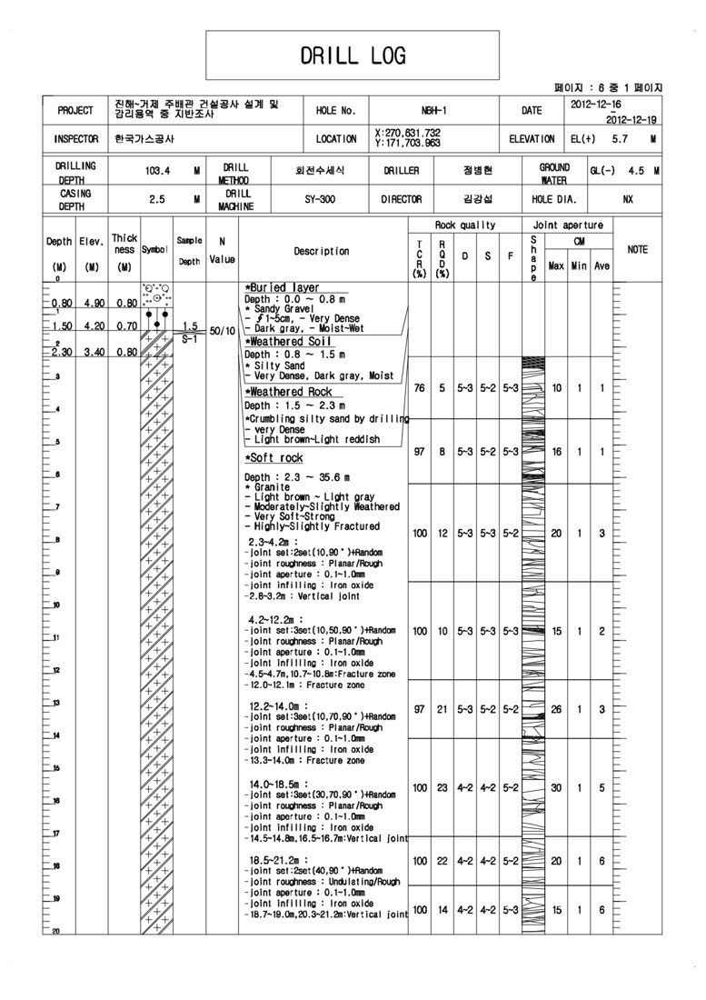
Demo
Sovereignty
Runs where your data lives.
Cloud · today
Mistral, Paris
- OCRMistral OCR
- Classify & extractMistral Large (Le Chonk)
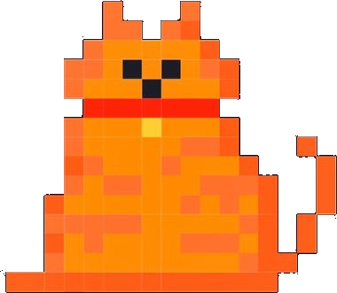
Best OCR and zero data retention.
On-premise
One GPU, 32 GB
- OCRPaddleOCR-VL
- Classify, extract, chatQwen 3.8 27B
Never leaves the building.
Site office
Mac mini, 32 GB
- OCRPaddleOCR-VL
- Classify, extract, chatQwen 3.8 27B
Fully offline.
Team Tiramisu
Built in Breisgau.
Prada
Design
Tiwen
Design
Vidhu
Backend & data
Felix
Backend & data
Arav
Backend & data
Mateo
Product & pitch
In a nutshell.
- ✓Multilingual
- ✓Sovereign stack
- ✓Ready to use now
Questions?
Questions about Stuttgart 21 go to Deutsche Bahn.